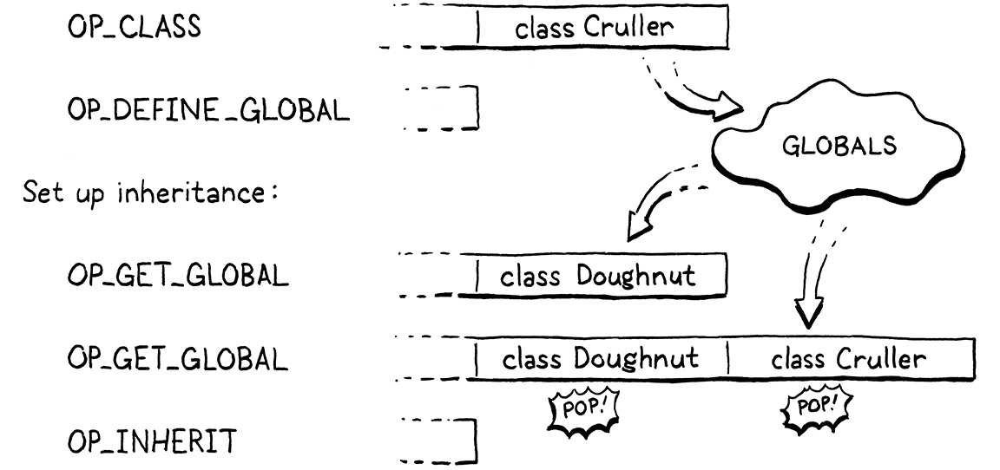

Super-classes
On peut choisir ses amis, on ne peut pas choisir sa famille. On en est pas moins parents pour être distants, et il est idiot de nier cette évidence.
Harper Lee, Ne tirez pas sur l’oiseau moqueur
C’est le tout dernier chapitre où nous ajoutons de nouvelles fonctionnalités à notre VM. Nous y avons déjà empaqueté presque tout le langage Lox entier. Tout ce qui reste est d’hériter des méthodes et d’appeler des méthodes de superclasse. Nous avons un autre chapitre après celui-ci, mais il n’introduit aucun nouveau comportement. Il rend seulement les choses existantes plus rapides. Arrivez à la fin de celui-ci, et vous aurez une implémentation Lox complète.
Une partie du matériel dans ce chapitre vous rappellera jlox. La façon dont nous résolvons les appels super est à peu près la même, bien que vue à travers le mécanisme plus complexe de clox pour stocker l’état sur la pile. Mais nous avons une façon entièrement différente, beaucoup plus rapide, de gérer les appels de méthode héritée cette fois-ci.
29 . 1Hériter des Méthodes
Nous lancerons les choses avec l’héritage de méthode puisque c’est le morceau le plus simple. Pour rafraîchir votre mémoire, la syntaxe d’héritage Lox ressemble à ceci :
class Doughnut { cook() { print "Dunk in the fryer."; } } class Cruller < Doughnut { finish() { print "Glaze with icing."; } }
Ici, la classe Cruller hérite de Doughnut et ainsi, les instances de Cruller héritent de la méthode cook(). Je ne sais pas pourquoi je m’attarde là-dessus. Vous savez comment l’héritage fonctionne. Commençons à compiler la nouvelle syntaxe.
currentClass = &classCompiler;
in classDeclaration()
if (match(TOKEN_LESS)) { consume(TOKEN_IDENTIFIER, "Expect superclass name."); variable(false); namedVariable(className, false); emitByte(OP_INHERIT); }
namedVariable(className, false);
Après que nous compilons le nom de la classe, si le prochain jeton est un <, alors nous avons trouvé une clause de superclasse. Nous consommons le jeton identifiant de la superclasse, puis appelons variable(). Cette fonction prend le jeton précédemment consommé, le traite comme une référence de variable, et émet du code pour charger la valeur de la variable. En d’autres termes, elle cherche la superclasse par nom et l’empile sur la pile.
Après cela, nous appelons namedVariable() pour charger la sous-classe faisant l’héritage sur la pile, suivie par une instruction OP_INHERIT. Cette instruction câble la superclasse à la nouvelle sous-classe. Dans le dernier chapitre, nous avons défini une instruction OP_METHOD pour muter un objet classe existant en ajoutant une méthode à sa table de méthode. C’est similaire—l’instruction OP_INHERIT prend une classe existante et applique l’effet de l’héritage à elle.
Dans l’exemple précédent, quand le compilateur travaille à travers ce bout de syntaxe :
class Cruller < Doughnut {
Le résultat est ce bytecode :
Avant que nous implémentions la nouvelle instruction OP_INHERIT, nous avons un cas limite à détecter.
variable(false);
in classDeclaration()
if (identifiersEqual(&className, &parser.previous)) {
error("A class can't inherit from itself.");
}
namedVariable(className, false);
Une classe ne peut pas être sa propre superclasse. À moins que vous n’ayez accès à un physicien nucléaire dérangé et une DeLorean très lourdement modifiée, vous ne pouvez pas hériter de vous-même.
29 . 1 . 1Exécuter l’héritage
Maintenant sur la nouvelle instruction.
OP_CLASS,
in enum OpCode
OP_INHERIT,
OP_METHOD
Il n’y a pas d’opérandes dont se soucier. Les deux valeurs dont nous avons besoin—superclasse et sous-classe—sont toutes deux trouvées sur la pile. Cela signifie que le désassemblage est facile.
return constantInstruction("OP_CLASS", chunk, offset);
in disassembleInstruction()
case OP_INHERIT: return simpleInstruction("OP_INHERIT", offset);
case OP_METHOD:
L’interpréteur est où l’action se passe.
break;
in run()
case OP_INHERIT: { Value superclass = peek(1); ObjClass* subclass = AS_CLASS(peek(0)); tableAddAll(&AS_CLASS(superclass)->methods, &subclass->methods); pop(); // Subclass. break; }
case OP_METHOD:
Du haut de la pile vers le bas, nous avons la sous-classe puis la superclasse. Nous attrapons les deux et ensuite faisons le bout d’héritage. C’est là que clox prend un chemin différent de jlox. Dans notre premier interpréteur, chaque sous-classe stockait une référence à sa superclasse. Lors de l’accès méthode, si nous ne trouvions pas la méthode dans la table de méthode de la sous-classe, nous parcourions récursivement la chaîne d’héritage en regardant la table de méthode de chaque ancêtre jusqu’à ce que nous la trouvions.
Par exemple, appeler cook() sur une instance de Cruller envoie jlox dans ce voyage :

C’est beaucoup de travail à effectuer durant le temps d’invocation de méthode. C’est lent, et pire, plus une méthode héritée est loin haut dans la chaîne d’ancêtre, plus cela devient lent. Pas une bonne histoire de performance.
La nouvelle approche est beaucoup plus rapide. Quand la sous-classe est déclarée, nous copions toutes les méthodes de la classe héritée vers le bas dans la propre table de méthode de la sous-classe. Plus tard, lors de l’appel d’une méthode, toute méthode héritée d’une superclasse sera trouvée juste dans la propre table de méthode de la sous-classe. Il n’y a aucun travail runtime supplémentaire nécessaire pour l’héritage du tout. Au moment où la classe est déclarée, le travail est fait. Cela signifie que les appels de méthode héritée sont exactement aussi rapides que les appels de méthode normaux—une seule recherche dans la table de hachage.

J’ai parfois entendu cette technique appelée “copy-down inheritance” (héritage par copie vers le bas). C’est simple et rapide, mais, comme la plupart des optimisations, vous arrivez à l’utiliser seulement sous certaines contraintes. Cela fonctionne dans Lox parce que les classes Lox sont fermées. Une fois qu’une déclaration de classe est finie d’exécuter, l’ensemble des méthodes pour cette classe ne peut jamais changer.
Dans des langages comme Ruby, Python, et JavaScript, il est possible de craquer pour ouvrir une classe existante et fourrer quelques nouvelles méthodes dedans ou même les enlever. Cela briserait notre optimisation parce que si ces modifications arrivaient à une superclasse après que la déclaration de sous-classe ait exécuté, la sous-classe ne ramasserait pas ces changements. Cela brise l’attente d’un utilisateur que l’héritage reflète toujours l’état courant de la superclasse.
Heureusement pour nous (mais pas pour les utilisateurs qui aiment la fonctionnalité, je suppose), Lox ne vous laisse pas rapiécer les singes ou poinçonner les canards, donc nous pouvons sûrement appliquer cette optimisation.
Qu’en est-il des surcharges de méthode ? Copier les méthodes de la superclasse dans la table de méthode de la sous-classe n’entrera-t-il pas en conflit avec les propres méthodes de la sous-classe ? Heureusement, non. Nous émettons le OP_INHERIT après l’instruction OP_CLASS qui crée la sous-classe mais avant que toutes déclarations de méthode et instructions OP_METHOD aient été compilées. Au point où nous copions les méthodes de la superclasse vers le bas, la table de méthode de la sous-classe est vide. Toutes méthodes que la sous-classe surcharge écraseront ces entrées héritées dans la table.
29 . 1 . 2Superclasses invalides
Notre implémentation est simple et rapide, ce qui est juste la façon dont j’aime mon code VM. Mais ce n’est pas robuste. Rien n’empêche un utilisateur d’hériter d’un objet qui n’est pas une classe du tout :
var NotClass = "So not a class"; class OhNo < NotClass {}
Évidemment, aucun programmeur qui se respecte n’écrirait cela, mais nous devons nous garder contre les utilisateurs Lox potentiels qui n’ont aucun respect de soi. Une simple vérification à l’exécution répare cela.
Value superclass = peek(1);
in run()
if (!IS_CLASS(superclass)) { runtimeError("Superclass must be a class."); return INTERPRET_RUNTIME_ERROR; }
ObjClass* subclass = AS_CLASS(peek(0));
Si la valeur que nous avons chargée depuis l’identifiant dans la clause de superclasse n’est pas une ObjClass, nous rapportons une erreur d’exécution pour faire savoir à l’utilisateur ce que nous pensons d’eux et de leur code.
29 . 2Stocker les Superclasses
Avez-vous remarqué que quand nous avons ajouté l’héritage de méthode, nous n’avons pas réellement ajouté de référence d’une sous-classe vers sa superclasse ? Après que nous copions les méthodes héritées, nous oublions la superclasse entièrement. Nous n’avons pas besoin de garder une poignée sur la superclasse, donc nous ne le faisons pas.
Cela ne sera pas suffisant pour supporter les appels super. Puisqu’une sous-classe peut surcharger la méthode de superclasse, nous avons besoin d’être capable de mettre nos mains sur les tables de méthode de superclasse. Avant que nous arrivions à ce mécanisme, je veux rafraîchir votre mémoire sur comment les appels super sont résolus statiquement.
De retour dans les jours sereins de jlox, je vous ai montré cet exemple délicat pour expliquer la façon dont les appels super sont répartis :
class A { method() { print "A method"; } } class B < A { method() { print "B method"; } test() { super.method(); } } class C < B {} C().test();
À l’intérieur du corps de la méthode test(), this est une instance de C. Si les appels super étaient résolus relativement à la superclasse du receveur, alors nous chercherions dans la superclasse de C, B. Mais les appels super sont résolus relativement à la superclasse de la classe environnante où l’appel super se produit. Dans ce cas, nous sommes dans la méthode test() de B, donc la superclasse est A, et le programme devrait afficher “A method”.
Cela signifie que les appels super ne sont pas résolus dynamiquement basés sur l’instance à l’exécution. La superclasse utilisée pour chercher la méthode est une propriété statique—pratiquement lexicale—d’où l’appel se produit. Quand nous avons ajouté l’héritage à jlox, nous avons pris avantage de cet aspect statique en stockant la superclasse dans la même structure Environment que nous utilisions pour toutes les portées lexicales. Presque comme si l’interpréteur voyait le programme ci-dessus comme ceci :
class A { method() { print "A method"; } } var Bs_super = A; class B < A { method() { print "B method"; } test() { runtimeSuperCall(Bs_super, "method"); } } var Cs_super = B; class C < B {} C().test();
Chaque sous-classe a une variable cachée stockant une référence à sa superclasse. Chaque fois que nous avons besoin d’effectuer un appel super, nous accédons à la superclasse depuis cette variable et disons au runtime de commencer à chercher des méthodes là.
Nous prendrons le même chemin avec clox. La différence est qu’au lieu de la classe Environment allouée sur le tas de jlox, nous avons la pile de valeurs et le système d’upvalue de la VM à bytecode. La machinerie est un peu différente, mais l’effet global est le même.
29 . 2 . 1Une variable locale superclasse
Notre compilateur émet déjà du code pour charger la superclasse sur la pile. Au lieu de laisser cet emplacement comme un temporaire, nous créons une nouvelle portée et en faisons une variable locale.
}
in classDeclaration()
beginScope(); addLocal(syntheticToken("super")); defineVariable(0);
namedVariable(className, false);
emitByte(OP_INHERIT);
Créer une nouvelle portée lexicale assure que si nous déclarons deux classes dans la même portée, chacune a un emplacement local différent pour stocker sa superclasse. Puisque nous nommons toujours cette variable “super”, si nous ne faisions pas une portée pour chaque sous-classe, les variables entreraient en collision.
Nous nommons la variable “super” pour la même raison que nous utilisons “this” comme le nom de la variable locale cachée vers laquelle les expressions this se résolvent : “super” est un mot réservé, ce qui garantit que la variable cachée du compilateur n’entrera pas en collision avec une définie par l’utilisateur.
La différence est que lors de la compilation des expressions this, nous avons commodément un jeton assis là dont le lexème est “this”. Nous ne sommes pas si chanceux ici. Au lieu de cela, nous ajoutons une petite fonction d’aide pour créer un jeton synthétique pour la chaîne constante donnée.
add after variable()
static Token syntheticToken(const char* text) { Token token; token.start = text; token.length = (int)strlen(text); return token; }
Puisque nous avons ouvert une portée locale pour la variable superclasse, nous avons besoin de la fermer.
emitByte(OP_POP);
in classDeclaration()
if (classCompiler.hasSuperclass) { endScope(); }
currentClass = currentClass->enclosing;
Nous dépilons la portée et jetons la variable “super” après avoir compilé le corps de classe et ses méthodes. De cette façon, la variable est accessible dans toutes les méthodes de la sous-classe. C’est une optimisation quelque peu inutile, mais nous créons la portée seulement s’il y a une clause de superclasse. Ainsi nous avons besoin de fermer la portée seulement s’il y en a une.
Pour suivre cela, nous pourrions déclarer une petite variable locale dans classDeclaration(). Mais bientôt, d’autres fonctions dans le compilateur auront besoin de savoir si la classe environnante est une sous-classe ou non. Donc nous pouvons aussi bien donner à nos futurs nous-mêmes un coup de main et stocker ce fait comme un champ dans le ClassCompiler maintenant.
typedef struct ClassCompiler {
struct ClassCompiler* enclosing;
in struct ClassCompiler
bool hasSuperclass;
} ClassCompiler;
Quand nous initialisons d’abord un ClassCompiler, nous supposons qu’il n’est pas une sous-classe.
ClassCompiler classCompiler;
in classDeclaration()
classCompiler.hasSuperclass = false;
classCompiler.enclosing = currentClass;
Ensuite, si nous voyons une clause de superclasse, nous savons que nous compilons une sous-classe.
emitByte(OP_INHERIT);
in classDeclaration()
classCompiler.hasSuperclass = true;
}
Cette machinerie nous donne un mécanisme à l’exécution pour accéder à l’objet superclasse de la sous-classe environnante depuis l’intérieur de n’importe quelles méthodes de la sous-classe—émettre simplement du code pour charger la variable nommée “super”. Cette variable est une locale en dehors du corps de la méthode, mais notre support d’upvalue existant permet à la VM de capturer cette locale à l’intérieur du corps de la méthode ou même dans des fonctions imbriquées à l’intérieur de cette méthode.
29 . 3Appels Super
Avec ce support runtime en place, nous sommes prêts à implémenter les appels super. Comme d’habitude, nous allons du front vers le back, commençant avec la nouvelle syntaxe. Un appel super commence, assez naturellement, avec le mot-clé super.
[TOKEN_RETURN] = {NULL, NULL, PREC_NONE},
replace 1 line
[TOKEN_SUPER] = {super_, NULL, PREC_NONE},
[TOKEN_THIS] = {this_, NULL, PREC_NONE},
Quand l’analyseur d’expression atterrit sur un jeton super, le contrôle saute vers une nouvelle fonction d’analyse qui démarre comme ceci :
add after syntheticToken()
static void super_(bool canAssign) { consume(TOKEN_DOT, "Expect '.' after 'super'."); consume(TOKEN_IDENTIFIER, "Expect superclass method name."); uint8_t name = identifierConstant(&parser.previous); }
C’est assez différent de comment nous avons compilé les expressions this. Contrairement à this, un jeton super n’est pas une expression autonome. Au lieu de cela, le point et le nom de méthode le suivant sont des parties inséparables de la syntaxe. Cependant, la liste d’arguments parenthesée est séparée. Comme avec l’accès méthode normal, Lox supporte d’obtenir une référence à une méthode de superclasse comme une fermeture sans l’invoquer :
class A { method() { print "A"; } } class B < A { method() { var closure = super.method; closure(); // Affiche "A". } }
En d’autres termes, Lox n’a pas vraiment d’expressions d’appel super, il a des expressions d’accès super, que vous pouvez choisir d’invoquer immédiatement si vous voulez. Donc quand le compilateur frappe un jeton super, nous consommons le jeton . subséquent et ensuite cherchons un nom de méthode. Les méthodes sont cherchées dynamiquement, donc nous utilisons identifierConstant() pour prendre le lexème du jeton nom de méthode et le stocker dans la table des constantes juste comme nous faisons pour les expressions d’accès propriété.
Voice ce que le compilateur fait après avoir consommé ces jetons :
uint8_t name = identifierConstant(&parser.previous);
in super_()
namedVariable(syntheticToken("this"), false); namedVariable(syntheticToken("super"), false); emitBytes(OP_GET_SUPER, name);
}
Afin d’accéder à une méthode de superclasse sur l’instance courante, le runtime a besoin à la fois du receveur et de la superclasse de la classe de la méthode environnante. Le premier appel namedVariable() génère du code pour chercher le receveur courant stocké dans la variable cachée “this” et l’empiler sur la pile. Le second appel namedVariable() émet du code pour chercher la superclasse depuis sa variable “super” et l’empiler au sommet.
Finalement, nous émettons une nouvelle instruction OP_GET_SUPER avec un opérande pour l’index de table constante du nom de la méthode. C’est beaucoup à tenir dans votre tête. Pour rendre cela tangible, considérez ce programme exemple :
class Doughnut { cook() { print "Dunk in the fryer."; this.finish("sprinkles"); } finish(ingredient) { print "Finish with " + ingredient; } } class Cruller < Doughnut { finish(ingredient) { // No sprinkles, always icing. super.finish("icing"); } }
Le bytecode émis pour l’expression super.finish("icing") ressemble et fonctionne comme ceci :

Les trois premières instructions donnent au runtime l’accès aux trois pièces d’information dont il a besoin pour effectuer l’accès super :
-
La première instruction charge l’instance sur la pile.
-
La seconde instruction charge la superclasse où la méthode est résolue.
-
Ensuite la nouvelle instruction
OP_GET_SUPERencode le nom de la méthode à accéder comme un opérande.
Les instructions restantes sont le bytecode normal pour évaluer une liste d’arguments et appeler une fonction.
Nous sommes presque prêts à implémenter la nouvelle instruction OP_GET_SUPER dans l’interpréteur. Mais avant que nous fassions, le compilateur a quelques erreurs qu’il est responsable de rapporter.
static void super_(bool canAssign) {
in super_()
if (currentClass == NULL) { error("Can't use 'super' outside of a class."); } else if (!currentClass->hasSuperclass) { error("Can't use 'super' in a class with no superclass."); }
consume(TOKEN_DOT, "Expect '.' after 'super'.");
Un appel super est significatif seulement à l’intérieur du corps d’une méthode (ou dans une fonction imbriquée à l’intérieur d’une méthode), et seulement à l’intérieur de la méthode d’une classe qui a une superclasse. Nous détectons ces deux cas utilisant la valeur de currentClass. Si c’est NULL ou pointe vers une classe avec aucune superclasse, nous rapportons ces erreurs.
29 . 3 . 1Exécuter les accès super
Supposant que l’utilisateur n’a pas mis une expression super où elle n’est pas permise, leur code passe du compilateur au runtime. Nous avons nous-mêmes une nouvelle instruction.
OP_SET_PROPERTY,
in enum OpCode
OP_GET_SUPER,
OP_EQUAL,
Nous la désassemblons comme d’autres opcodes qui prennent un opérande index de table constant.
return constantInstruction("OP_SET_PROPERTY", chunk, offset);
in disassembleInstruction()
case OP_GET_SUPER: return constantInstruction("OP_GET_SUPER", chunk, offset);
case OP_EQUAL:
Vous pourriez anticiper quelque chose de plus dur, mais interpréter la nouvelle instruction est similaire à exécuter un accès de propriété normal.
}
in run()
case OP_GET_SUPER: { ObjString* name = READ_STRING(); ObjClass* superclass = AS_CLASS(pop()); if (!bindMethod(superclass, name)) { return INTERPRET_RUNTIME_ERROR; } break; }
case OP_EQUAL: {
Comme avec les propriétés, nous lisons le nom de la méthode depuis la table des constantes. Ensuite nous passons cela à bindMethod() qui cherche la méthode dans la table de méthode de la classe donnée et crée une ObjBoundMethod pour empaqueter la fermeture résultante à l’instance courante.
La différence clé est quelle classe nous passons à bindMethod(). Avec un accès de propriété normal, nous utilisons la propre classe de l’ObjInstance, qui nous donne la répartition dynamique que nous voulons. Pour un appel super, nous n’utilisons pas la classe de l’instance. Au lieu de cela, nous utilisons la superclasse résolue statiquement de la classe contenante, que le compilateur a commodément assurée être assise au sommet de la pile attendant pour nous.
Nous dépilons cette superclasse et la passons à bindMethod(), qui saute correctement par-dessus toutes méthodes surchargeantes dans n’importe lesquelles des sous-classes entre cette superclasse et la propre classe de l’instance. Elle inclut aussi correctement toutes méthodes héritées par la superclasse depuis n’importe lesquelles de ses superclasses.
Le reste du comportement est le même. Dépiler la superclasse laisse l’instance au sommet de la pile. Quand bindMethod() réussit, elle dépile l’instance et empile la nouvelle méthode liée. Sinon, elle rapporte une erreur d’exécution et renvoie false. Dans ce cas, nous avortons l’interpréteur.
29 . 3 . 2Appels super plus rapides
Nous avons les accès méthode superclasse fonctionnant maintenant. Et puisque l’objet renvoyé est une ObjBoundMethod que vous pouvez alors invoquer, nous avons les appels super fonctionnant aussi. Juste comme au dernier chapitre, nous avons atteint un point où notre VM a la sémantique complète, correcte.
Mais, aussi comme au dernier chapitre, c’est assez lent. Encore, nous allouons sur le tas une ObjBoundMethod pour chaque appel super même si la plupart du temps la toute prochaine instruction est un OP_CALL qui dépaquette immédiatement cette méthode liée, l’invoque, et ensuite la jette. En fait, ceci est encore plus susceptible d’être vrai pour les appels super que pour les appels de méthode réguliers. Au moins avec les appels de méthode il y a une chance que l’utilisateur invoque réellement une fonction stockée dans un champ. Avec les appels super, vous cherchez toujours une méthode. La seule question est si vous l’invoquez immédiatement ou non.
Le compilateur peut certainement répondre à cette question pour lui-même s’il voit une parenthèse gauche après le nom de méthode de superclasse, donc nous allons aller de l’avant et effectuer la même optimisation que nous avons faite pour les appels de méthode. Enlevez les deux lignes de code qui chargent la superclasse et émettent OP_GET_SUPER, et remplacez-les avec ceci :
namedVariable(syntheticToken("this"), false);
in super_()
replace 2 lines
if (match(TOKEN_LEFT_PAREN)) { uint8_t argCount = argumentList(); namedVariable(syntheticToken("super"), false); emitBytes(OP_SUPER_INVOKE, name); emitByte(argCount); } else { namedVariable(syntheticToken("super"), false); emitBytes(OP_GET_SUPER, name); }
}
Maintenant avant que nous émettions quoi que ce soit, nous cherchons une liste d’arguments parenthesée. Si nous en trouvons une, nous compilons cela. Ensuite nous chargeons la superclasse. Après cela, nous émettons une nouvelle instruction OP_SUPER_INVOKE. Cette superinstruction combine le comportement de OP_GET_SUPER et OP_CALL, donc elle prend deux opérandes : l’index de table constant du nom de la méthode à chercher et le nombre d’arguments à passer à elle.
Sinon, si nous ne trouvons pas un (, nous continuons à compiler l’expression comme un accès super comme nous faisions avant et émettons un OP_GET_SUPER.
Dérivant vers le bas du pipeline de compilation, notre premier arrêt est une nouvelle instruction.
OP_INVOKE,
in enum OpCode
OP_SUPER_INVOKE,
OP_CLOSURE,
Et juste passé ça, son support désassembleur.
return invokeInstruction("OP_INVOKE", chunk, offset);
in disassembleInstruction()
case OP_SUPER_INVOKE: return invokeInstruction("OP_SUPER_INVOKE", chunk, offset);
case OP_CLOSURE: {
Une instruction d’invocation super a le même ensemble d’opérandes que OP_INVOKE, donc nous réutilisons le même assistant pour la désassembler. Finalement, le pipeline nous déverse dans l’interpréteur.
break;
}
in run()
case OP_SUPER_INVOKE: { ObjString* method = READ_STRING(); int argCount = READ_BYTE(); ObjClass* superclass = AS_CLASS(pop()); if (!invokeFromClass(superclass, method, argCount)) { return INTERPRET_RUNTIME_ERROR; } frame = &vm.frames[vm.frameCount - 1]; break; }
case OP_CLOSURE: {
Cette poignée de code est essentiellement notre implémentation de OP_INVOKE mélangée ensemble avec un trait de OP_GET_SUPER. Il y a quelques différences dans comment la pile est organisée, cependant. Avec un appel super non optimisé, la superclasse est dépilée et remplacée par l’ObjBoundMethod pour la fonction résolue avant que les arguments à l’appel soient exécutés. Cela assure qu’au moment où le OP_CALL est exécuté, la méthode liée est sous la liste d’arguments, où le runtime s’attend à ce qu’elle soit pour un appel de fermeture.
Avec nos instructions optimisées, les choses sont mélangées un peu :

Maintenant résoudre la méthode de superclasse est partie de l’invocation, donc les arguments ont besoin d’être déjà sur la pile au point que nous cherchons la méthode. Cela signifie que l’objet superclasse est au sommet des arguments.
À part cela, le comportement est grossièrement le même qu’un OP_GET_SUPER suivi par un OP_CALL. D’abord, nous tirons le nom de la méthode et les opérandes compte d’arguments. Ensuite nous dépilons la superclasse du sommet de la pile pour que nous puissions chercher la méthode dans sa table de méthode. Cela laisse commodément la pile configurée juste bien pour un appel de méthode.
Nous passons la superclasse, le nom de méthode, et le compte d’arguments à notre fonction invokeFromClass() existante. Cette fonction cherche la méthode donnée sur la classe donnée et tente de créer un appel à elle avec l’arité donnée. Si une méthode ne pouvait pas être trouvée, elle renvoie false, et nous évacuons de l’interpréteur. Sinon, invokeFromClass() empile une nouvelle CallFrame sur la pile d’appels pour la fermeture de la méthode. Cela invalide le pointeur CallFrame mis en cache de l’interpréteur, donc nous rafraîchissons frame.
29 . 4Une Machine Virtuelle Complète
Jetez un coup d’œil en arrière à ce que nous avons créé. Par mon compte, nous avons écrit environ 2 500 lignes de C assez propre, direct. Ce petit programme contient une implémentation complète du langage Lox—tout à fait haut niveau !—avec une table de précédence entière pleine de types d’expression et une suite de déclarations de flux de contrôle. Nous avons implémenté des variables, fonctions, fermetures, classes, champs, méthodes, et héritage.
Encore plus impressionnant, notre implémentation est portable vers n’importe quelle plateforme avec un compilateur C, et est assez rapide pour un usage en production dans le monde réel. Nous avons un compilateur bytecode à une passe, un interpréteur de machine virtuelle serré pour notre jeu d’instructions interne, des représentations d’objet compactes, une pile pour stocker les variables sans allocation tas, et un ramasse-miettes précis.
Si vous sortez et commencez à fouiller dans les implémentations de Lua, Python, ou Ruby, vous serez surpris par combien de cela vous semble maintenant familier. Vous avez sérieusement augmenté votre niveau de connaissance de comment les langages de programmation fonctionnent, ce qui en retour vous donne une compréhension plus profonde de la programmation elle-même. C’est comme si vous étiez un pilote de voiture de course, et maintenant vous pouvez ouvrir le capot et réparer le moteur aussi.
Vous pouvez arrêter ici si vous voulez. Les deux implémentations de Lox que vous avez sont complètes et pleines de fonctionnalités. Vous avez construit la voiture et pouvez la conduire où vous voulez maintenant. Mais si vous cherchez à avoir plus de plaisir à régler et peaufiner pour encore une plus grande performance sur la piste, il y a un chapitre de plus. Nous n’ajoutons aucune nouvelle capacité, mais nous roulons dans une couple d’optimisations classiques pour presser encore plus de perf dehors. Si cela semble amusant, continuez à lire . . .
29 . 5Défis
-
Un principe de la programmation orientée objet est qu’une classe devrait assurer que les nouveaux objets sont dans un état valide. Dans Lox, cela signifie définir un initialisateur qui peuple les champs de l’instance. L’héritage complique les invariants parce que l’instance doit être dans un état valide selon toutes les classes dans la chaîne d’héritage de l’objet.
La partie facile est de se souvenir d’appeler
super.init()dans la méthodeinit()de chaque sous-classe. La partie plus dure est les champs. Il n’y a rien empêchant deux classes dans la chaîne d’héritage de réclamer accidentellement le même nom de champ. Quand cela arrive, elles marcheront sur les champs de l’autre et vous laisseront possiblement avec une instance dans un état brisé.Si Lox était votre langage, comment adosseriez-vous cela, si du tout ? Si vous changiez le langage, implémentez votre changement.
-
Notre optimisation d’héritage par copie vers le bas est valide seulement parce que Lox ne vous permet pas de modifier les méthodes d’une classe après sa déclaration. Cela signifie que nous n’avons pas à nous soucier que les méthodes copiées dans la sous-classe se désynchronisent avec des changements ultérieurs à la superclasse.
D’autres langages, comme Ruby, permettent bien aux classes d’être modifiées après coup. Comment les implémentations de langages comme ça supportent la modification de classe tout en gardant la résolution de méthode efficace ?
-
Dans le chapitre jlox sur l’héritage, nous avions un défi pour implémenter l’approche du langage BETA à la surcharge de méthode. Résolvez le défi encore, mais cette fois dans clox. Voici la description du défi précédent :
Dans Lox, comme dans la plupart des autres langages orientés objet, lors de la recherche d’une méthode, nous commençons au bas de la hiérarchie de classe et travaillons notre chemin vers le haut—une méthode de sous-classe est préférée sur une méthode de superclasse. Afin d’arriver à la méthode de superclasse depuis l’intérieur d’une méthode surchargeante, vous utilisez
super.Le langage BETA prend l’approche opposée. Quand vous appelez une méthode, elle commence au haut de la hiérarchie de classe et travaille vers le bas. Une méthode de superclasse gagne sur une méthode de sous-classe. Afin d’arriver à la méthode de sous-classe, la méthode de superclasse peut appeler
inner, qui est une sorte d’inverse desuper. Elle enchaîne vers la méthode suivante vers le bas de la hiérarchie.La méthode de superclasse contrôle quand et où la sous-classe est permise de raffiner son comportement. Si la méthode de superclasse n’appelle pas
innerdu tout, alors la sous-classe n’a aucun moyen de surcharger ou modifier le comportement de la superclasse.Enlevez le comportement actuel de surcharge et de
superde Lox, et remplacez-le avec la sémantique de BETA. En bref :-
Lors de l’appel d’une méthode sur une classe, la méthode la plus haute sur la chaîne d’héritage de la classe prend la précédence.
-
À l’intérieur du corps d’une méthode, un appel à
innercherche une méthode avec le même nom dans la sous-classe la plus proche le long de la chaîne d’héritage entre la classe contenant leinneret la classe dethis. S’il n’y a pas de méthode correspondante, l’appelinnerne fait rien.
Par exemple :
class Doughnut { cook() { print "Fry until golden brown."; inner(); print "Place in a nice box."; } } class BostonCream < Doughnut { cook() { print "Pipe full of custard and coat with chocolate."; } } BostonCream().cook();
Ceci devrait afficher :
Fry until golden brown. Pipe full of custard and coat with chocolate. Place in a nice box.
Puisque clox est à propos non seulement d’implémenter Lox, mais de le faire avec une bonne performance, cette fois-ci essayez de résoudre le défi avec un œil vers l’efficacité.
-